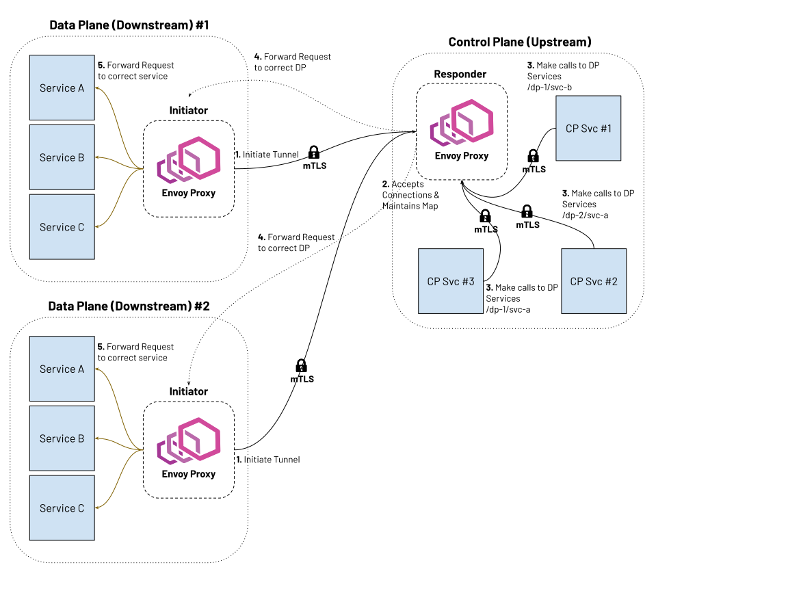

Reverse tunnels overview
Attention
The reverse tunnels feature is experimental and is currently under active development.
Envoy supports reverse tunnels that enable establishing persistent connections from downstream Envoy instances to upstream Envoy instances without requiring the upstream to be directly reachable from the downstream. This feature is particularly useful in scenarios where downstream instances are behind NATs, firewalls, or in private networks, and need to communicate with upstream instances in public networks or cloud environments.
Reverse tunnels invert the typical connection model: the downstream Envoy initiates TCP connections to upstream Envoy instances and keeps them alive for reuse. These connections are established using a handshake protocol, after which traffic can be forwarded bidirectionally. Services behind the upstream Envoy can send requests through the tunnel to downstream services behind the initiator Envoy, effectively treating the normally unreachable downstream services as if they were directly accessible.
{kind=link}

Reverse tunnels require the following extensions:
Downstream socket interface: Registered as a bootstrap extension on the initiator Envoy to initiate and maintain reverse tunnels.
Upstream socket interface: Registered as a bootstrap extension on the responder Envoy to accept and manage reverse tunnels.
Reverse tunnel network filter: Configured on the responder Envoy to accept and validate reverse tunnel handshake requests.
Reverse connection cluster: Configured on the responder Envoy to route data requests to downstream nodes through established reverse tunnels.
Initiator configuration (downstream Envoy)
The initiator Envoy (downstream) requires the following configuration components to establish reverse tunnels:
Downstream socket interface
8- name: envoy.bootstrap.reverse_tunnel.downstream_socket_interface
9 typed_config:
10 "@type": >-
11 type.googleapis.com/envoy.extensions.bootstrap.reverse_tunnel.downstream_socket_interface.v3.DownstreamReverseConnectionSocketInterface
12 stat_prefix: "downstream_reverse_connection"
This extension enables the initiator Envoy to establish and maintain reverse tunnel connections to the responder Envoy.
Reverse tunnel listener
The reverse tunnel listener triggers reverse connection initiation to the upstream Envoy and encodes
identity metadata for the local Envoy instance. The listener’s address field uses a special rc://
format to specify connection parameters, and its route configuration defines which downstream services
are reachable through the reverse tunnel.
33 listeners:
34 # Initiates reverse connections to upstream using custom resolver
35 - name: reverse_conn_listener
36 listener_filters_timeout: 0s
37 listener_filters: []
38 # Use custom address with reverse connection metadata encoded in URL format
39 address:
40 socket_address:
41 # This encodes: src_node_id, src_cluster_id, src_tenant_id
42 # and remote clusters: upstream-cluster with 1 connection
43 address: "rc://downstream-node:downstream-cluster:downstream-tenant@upstream-cluster:1"
44 port_value: 0
45 # Use custom resolver that can parse reverse connection metadata
46 resolver_name: "envoy.resolvers.reverse_connection"
47 filter_chains:
48 - filters:
49 - name: envoy.filters.network.http_connection_manager
50 typed_config:
51 "@type": >-
52 type.googleapis.com/envoy.extensions.filters.network.http_connection_manager.v3.HttpConnectionManager
53 stat_prefix: reverse_conn_listener
54 route_config:
55 virtual_hosts:
56 - name: backend
57 domains:
58 - "*"
59 routes:
60 - match:
61 prefix: '/downstream_service'
62 route:
63 cluster: downstream-service
64 http_filters:
65 - name: envoy.filters.http.router
66 typed_config:
The special rc:// address format encodes connection and identity metadata:
rc://src_node_id:src_cluster_id:src_tenant_id@remote_cluster:connection_count
In the example above, this expands to:
src_node_id:downstream-node- Unique identifier for this specific Envoy instance.src_cluster_id:downstream-cluster- Logical grouping identifier for this Envoy and its peers.src_tenant_id:downstream-tenant- Tenant identifier for multi-tenant isolation.remote_cluster:upstream-cluster- Name of the upstream cluster to connect to.connection_count:1- Number of reverse connections to establish to each resolved endpoint (host) of the remote cluster, not per cluster. See Connection count semantics below.
The identifiers serve the following purposes:
src_node_id: Each node must have a unique
src_node_idacross the entire system to ensure proper routing and connection management. Data requests can target a specific node by its ID.src_cluster_id: Multiple nodes can share the same
src_cluster_id, forming a logical group. Data requests sent using the cluster ID will be load balanced across all nodes in that cluster. Thesrc_cluster_idmust not collide with anysrc_node_id.src_tenant_id: Used in multi-tenant environments to isolate traffic and resources between different tenants or organizational units.
Note
connection_count is applied per resolved endpoint (host), not per cluster. The initiator
resolves the remote cluster to its set of hosts and maintains connection_count connections to
each one, so the total for a cluster is number_of_resolved_endpoints * connection_count. For
example, a cluster that resolves to 2 endpoints (such as a STRICT_DNS cluster or a headless
Service with 2 replicas) with connection_count: 4 establishes 8 connections in total, 4 to
each endpoint, not 4 shared across the cluster. Size your socket budget accordingly.
The downstream-service cluster in the example refers to the service behind the initiator Envoy that will be accessed via reverse tunnels from services behind the responder Envoy.
85 # Backend HTTP service behind downstream which
86 # we will access via reverse connections
87 - name: downstream-service
88 type: STRICT_DNS
89 connect_timeout: 30s
90 load_assignment:
91 cluster_name: downstream-service
92 endpoints:
93 - lb_endpoints:
94 - endpoint:
95 address:
96 socket_address:
Upstream cluster
Each upstream Envoy to which reverse tunnels should be established requires a cluster configuration. This cluster can be defined statically in the bootstrap configuration or added dynamically via the Cluster Discovery Service (CDS).
70 # Cluster designating upstream-envoy
71 clusters:
72 - name: upstream-cluster
73 type: STRICT_DNS
74 connect_timeout: 30s
75 load_assignment:
76 cluster_name: upstream-cluster
77 endpoints:
78 - lb_endpoints:
79 - endpoint:
80 address:
81 socket_address:
Multiple cluster support
To establish reverse tunnels to multiple upstream clusters simultaneously, use the additional_addresses
field on the listener. Each address in this list specifies an additional upstream cluster and the number
of connections to establish to each of its resolved endpoints.
name: multi_cluster_listener
address:
socket_address:
address: "rc://node-1:downstream-cluster:tenant-a@cluster-a:2"
port_value: 0
additional_addresses:
- address:
socket_address:
address: "rc://node-1:downstream-cluster:tenant-a@cluster-b:3"
port_value: 0
filter_chains:
- filters:
- name: envoy.filters.network.tcp_proxy
typed_config:
"@type": type.googleapis.com/envoy.extensions.filters.network.tcp_proxy.v3.TcpProxy
stat_prefix: tcp
cluster: dynamic_cluster
This configuration establishes:
2 connections to each resolved endpoint of
cluster-a3 connections to each resolved endpoint of
cluster-b
(per Connection count semantics).
TLS configuration
For secure reverse tunnel establishment, configure a TLS transport socket on the upstream cluster. The example below shows mutual TLS (mTLS) configuration with certificate pinning:
name: upstream-cluster
type: STRICT_DNS
connect_timeout: 30s
transport_socket:
name: envoy.transport_sockets.tls
typed_config:
"@type": type.googleapis.com/envoy.extensions.transport_sockets.tls.v3.UpstreamTlsContext
common_tls_context:
tls_certificates:
- certificate_chain:
filename: "/etc/ssl/certs/client-cert.pem"
private_key:
filename: "/etc/ssl/private/client-key.pem"
validation_context:
filename: "/etc/ssl/certs/ca-cert.pem"
verify_certificate_spki:
- "NdQcW/8B5PcygH/5tnDNXeA2WS/2JzV3K1PKz7xQlKo="
alpn_protocols: ["h2", "http/1.1"]
sni: upstream-envoy.example.com
This configuration provides mutual TLS authentication between the initiator and responder Envoys. The client certificate authenticates the initiator, while the server certificate and SPKI pinning authenticate the responder. The ALPN configuration negotiates HTTP/2, which is required for reverse tunnel operation.
Responder configuration (upstream Envoy)
The responder Envoy (upstream) requires the following configuration components to accept reverse tunnels:
Upstream socket interface
8- name: envoy.bootstrap.reverse_tunnel.upstream_socket_interface
9 typed_config:
10 "@type": >-
11 type.googleapis.com/envoy.extensions.bootstrap.reverse_tunnel.upstream_socket_interface.v3.UpstreamReverseConnectionSocketInterface
12 stat_prefix: "upstream_reverse_connection"
This extension enables the responder Envoy to accept and manage incoming reverse tunnel connections from initiator Envoys.
Tenant isolation can be enabled at the bootstrap level by setting enable_tenant_isolation: true in the
upstream socket interface configuration:
7bootstrap_extensions:
8- name: envoy.bootstrap.reverse_tunnel.upstream_socket_interface
9 typed_config:
10 "@type": >-
11 type.googleapis.com/envoy.extensions.bootstrap.reverse_tunnel.upstream_socket_interface.v3.UpstreamReverseConnectionSocketInterface
12 stat_prefix: "upstream_reverse_connection"
13 enable_tenant_isolation: true
When tenant isolation is enabled, Envoy scopes cached reverse tunnel sockets by tenant. The socket interface
concatenates the tenant identifier with the node and cluster identifiers using the : delimiter (for example
tenant-a:node-1). Because the delimiter is part of the composite key, handshake requests that include :
in any of the reverse tunnel headers are rejected with 400 to prevent ambiguous lookups. The flag defaults
to false to preserve existing behaviour.
Lifecycle access logs
The upstream socket interface can emit access logs for reverse-tunnel lifecycle events directly from
reverse-tunnel-owned code. Configure the access_log field on
envoy.bootstrap.reverse_tunnel.upstream_socket_interface to log tunnel setup, socket handoff,
tunnel close, and post-handoff HTTP/2 keepalive timeout events:
7bootstrap_extensions:
8- name: envoy.bootstrap.reverse_tunnel.upstream_socket_interface
9 typed_config:
10 "@type": >-
11 type.googleapis.com/envoy.extensions.bootstrap.reverse_tunnel.upstream_socket_interface.v3.UpstreamReverseConnectionSocketInterface
12 stat_prefix: "upstream_reverse_connection"
13 access_log:
14 - name: envoy.access_loggers.stdout
15 typed_config:
16 "@type": type.googleapis.com/envoy.extensions.access_loggers.stream.v3.StdoutAccessLog
17 log_format:
18 text_format_source:
19 inline_string: >-
20 event=%DYNAMIC_METADATA(envoy.reverse_tunnel.lifecycle:event)%
21 node=%FILTER_STATE(envoy.reverse_tunnel.node_id)%
22 cluster=%FILTER_STATE(envoy.reverse_tunnel.cluster_id)%
23 tenant=%FILTER_STATE(envoy.reverse_tunnel.tenant_id)%
24 reason=%CONNECTION_TERMINATION_DETAILS%
The lifecycle logger emits the following event names:
Core lifecycle events:
tunnel_setup– emitted when a new reverse tunnel connection is accepted and cached.socket_handoff– emitted when a cached idle socket is handed off to an upstream connection pool.tunnel_closed– emitted when the reverse tunnel connection is closed.http2_keepalive_timeout– emitted when the upstream connection closes locally due to an HTTP/2 keepalive (PING) timeout after handoff.
Idle-phase ping events (emitted while the socket is idle in the cache):
idle_ping_sent– anRPINGprobe was sent to verify the idle connection is alive.idle_ping_ack– the peer acknowledged theRPING.idle_ping_miss– noRPINGacknowledgement was received within the expected window.idle_ping_timeout– the idle connection is being closed because the peer failed to respond toRPINGprobes.
The dynamic metadata namespace is envoy.reverse_tunnel.lifecycle. The emitted fields are
event, node_id, cluster_id, tenant_id, worker, initiator_worker_id,
initiator_connection_id, fd, socket_state, and, when relevant, handoff_kind or
close_reason. worker is the acceptor’s own worker thread, while initiator_worker_id and
initiator_connection_id are the worker and connection identifiers advertised by the initiator in
the handshake (empty when the initiator does not advertise them).
Socket state values (the socket_state field):
idle– the socket is cached and waiting for a data request.handed_off– the socket has been handed off to an upstream connection pool.in_use– the socket is actively being used for upstream traffic.
Handoff kind values (the handoff_kind field, present only in socket_handoff events):
pool_to_upstream– the socket was handed off from the idle cache to the upstream connection pool.
Close reason values (the close_reason field, present only in tunnel_closed events):
idle_peer_close– the peer closed the connection while it was idle.idle_read_error– a read error occurred on the idle connection.idle_ping_write_failure– writing anRPINGprobe to the idle connection failed.idle_ping_timeout– the idle connection was closed becauseRPINGprobes went unanswered.remote_close– the peer closed the connection after handoff.local_close– Envoy closed the connection after handoff.explicit_close– the connection was explicitly closed (e.g., during shutdown).
The same identifiers are also copied into connection filter state under these keys:
envoy.reverse_tunnel.node_idenvoy.reverse_tunnel.cluster_idenvoy.reverse_tunnel.tenant_idenvoy.reverse_tunnel.workerenvoy.reverse_tunnel.initiator_worker_id(only when advertised by the initiator)envoy.reverse_tunnel.initiator_connection_id(only when advertised by the initiator)envoy.reverse_tunnel.fd
Reverse tunnel network filter
The envoy.filters.network.reverse_tunnel network filter implements the reverse tunnel handshake
protocol. It validates incoming connection requests and accepts or rejects them based on the handshake
parameters.
29 - name: rev_conn_api_listener
30 address:
31 socket_address:
32 address: 0.0.0.0
33 port_value: 9000
34 filter_chains:
35 - filters:
36 - name: envoy.filters.network.reverse_tunnel
37 typed_config:
38 "@type": >-
39 type.googleapis.com/envoy.extensions.filters.network.reverse_tunnel.v3.ReverseTunnel
40 ping_interval: 2s
41 auto_close_connections: true
Reverse connection cluster
The reverse connection cluster is a special cluster type that routes traffic through established reverse tunnels rather than creating new outbound connections. When a data request arrives at the upstream Envoy for a downstream node, the cluster looks up a cached reverse tunnel connection to that node and reuses it.
Each data request must include a host_id that identifies the target downstream node. This ID can be
specified directly in request headers or computed from them. The cluster extracts the host_id using
the configured host_id_format field and uses it to look up the appropriate reverse tunnel connection.
When tenant isolation is enabled (via enable_tenant_isolation: true in the upstream socket interface
bootstrap extension), the cluster must be configured with the tenant_id_format field. The cluster
automatically constructs tenant-scoped identifiers using the formatted tenant ID and the formatted host ID.
Important
When tenant isolation is enabled in the bootstrap configuration, tenant_id_format is required
for all reverse connection clusters. Envoy will fail to start if tenant isolation is enabled but
tenant_id_format is not configured in any reverse connection cluster. Additionally, the tenant
identifier must be derivable from the request context (i.e., the formatter must evaluate to a non-empty
value) at runtime. If the tenant identifier cannot be inferred, host selection will fail and the request
will not be routed. This ensures strict tenant isolation and prevents requests from being routed without
proper tenant scoping.
To observe post-handoff upstream connection events such as HTTP/2 keepalive timeout, add the reverse tunnel lifecycle upstream network filter to the reverse connection cluster:
105 - name: reverse_connection_cluster
106 connect_timeout: 200s
107 lb_policy: CLUSTER_PROVIDED
108 filters:
109 - name: envoy.filters.upstream_network.reverse_tunnel_lifecycle
110 typed_config:
111 "@type": type.googleapis.com/google.protobuf.Empty
This filter copies the reverse-tunnel identifiers into the handed-off upstream connection’s filter
state and emits exactly one http2_keepalive_timeout access-log event when the upstream
connection closes locally with http2_ping_timeout. The subsequent tunnel_closed record
reuses the same close reason.
104 clusters:
105 - name: reverse_connection_cluster
106 connect_timeout: 200s
107 lb_policy: CLUSTER_PROVIDED
108 filters:
109 - name: envoy.filters.upstream_network.reverse_tunnel_lifecycle
110 typed_config:
111 "@type": type.googleapis.com/google.protobuf.Empty
112 cluster_type:
113 name: envoy.clusters.reverse_connection
114 typed_config:
115 "@type": >-
116 type.googleapis.com/envoy.extensions.clusters.reverse_connection.v3.ReverseConnectionClusterConfig
117 cleanup_interval: 60s
118 # This is the actual host ID that will be used by the reverse connection cluster to look up a socket.
119 # The reverse connection cluster checks if there are cached sockets for this cluster, if so, it will
120 # use the socket. Otherwise, it assumes this is a downstream node and looks for cached sockets with
121 # this as the node instead.
122 host_id_format: "%REQ(x-computed-host-id)%"
123 typed_extension_protocol_options:
124 envoy.extensions.upstreams.http.v3.HttpProtocolOptions:
125 "@type": >-
126 type.googleapis.com/envoy.extensions.upstreams.http.v3.HttpProtocolOptions
127 explicit_http_config:
128 # Right the moment, reverse connections are supported over HTTP/2 only.
129 http2_protocol_options: {}
The reverse connection cluster configuration includes several key fields:
Load balancing policy
Must be set to CLUSTER_PROVIDED to delegate load balancing to the custom cluster implementation.
Host ID format
The host_id_format field uses Envoy’s formatter system to
extract the target downstream node identifier from the request context. Supported formatters include:
%REQ(header-name)%: Extract value from a request header.%DYNAMIC_METADATA(namespace:key)%: Extract value from dynamic metadata.%FILTER_STATE(key)%: Extract value from filter state.%DOWNSTREAM_REMOTE_ADDRESS%: Use the downstream connection address.Plain text and combinations of the above.
See the Egress listener for data traffic section for an example of processing headers
to set the host_id.
Protocol
Only HTTP/2 is supported for reverse connections. This is required to support multiplexing multiple data requests over a single TCP connection.
Connection reuse
Once a connection is established to a specific downstream node, it is cached and reused for all subsequent requests to that node. Each data request is multiplexed as a new HTTP/2 stream on the existing connection, avoiding the overhead of establishing new connections.
Observing reachable nodes
Because the cluster materializes an Envoy host for a downstream node only when the first data request for
that node arrives, the /clusters admin endpoint would
otherwise not list nodes that are connected but have not yet received traffic. To make the live inventory
discoverable, the cluster additionally reports every currently-reachable node on /clusters as a
read-only entry, so a client can see what is reachable over reverse tunnels before sending any request.
Each reported node appears as a host whose hostname encodes its tenant, cluster and node
identifiers as tenant:cluster:node (the tenant segment is omitted when tenant isolation is
disabled), together with an rt_connection_count gauge giving the number of established tunnels to
that node. The same hostname is used once the node materializes as a real load-balanced host. These
entries are informational only: they are not load-balanced hosts and do not affect
routing. The list is eventually consistent and is derived from the upstream socket interface’s per-node
connection gauges, so it requires enable_detailed_stats to be set on the upstream socket interface
bootstrap extension. A node drops off the list once its connection count reaches zero.
Egress listener for data traffic
An egress listener on the upstream Envoy accepts data requests and routes them to the reverse connection
cluster. This listener typically includes header processing logic to extract or compute the host_id
that identifies the target downstream node for each request.
43 # Listener that will route the downstream request to the reverse connection cluster
44 - name: egress_listener
45 address:
46 socket_address:
47 address: 0.0.0.0
48 port_value: 8085
49 filter_chains:
50 - filters:
51 - name: envoy.http_connection_manager
52 typed_config:
53 "@type": >-
54 type.googleapis.com/envoy.extensions.filters.network.http_connection_manager.v3.HttpConnectionManager
55 stat_prefix: egress_http
56 route_config:
57 virtual_hosts:
58 - name: backend
59 domains:
60 - "*"
61 routes:
62 - match:
63 prefix: "/downstream_service"
64 route:
65 cluster: reverse_connection_cluster
66 http_filters:
67 # The Lua filter is used to extract the host ID from the headers and set it in the x-computed-host-id header.
68 # This header is then used by the reverse connection cluster to look up a socket.
69 # The reverse connection cluster checks if there are cached sockets for this host.
70 - name: envoy.filters.http.lua
71 typed_config:
72 "@type": type.googleapis.com/envoy.extensions.filters.http.lua.v3.Lua
73 inline_code: |
74 function envoy_on_request(request_handle)
75 local headers = request_handle:headers()
76 local node_id = headers:get("x-node-id")
77 local cluster_id = headers:get("x-cluster-id")
78
79 local host_id = ""
80
81 -- Priority 1: x-node-id header
82 if node_id then
83 host_id = node_id
84 request_handle:logInfo("Using x-node-id as host_id: " .. host_id)
85 -- Priority 2: x-cluster-id header
86 elseif cluster_id then
87 host_id = cluster_id
88 request_handle:logInfo("Using x-cluster-id as host_id: " .. host_id)
89 else
90 request_handle:logError("No valid headers found: x-node-id or x-cluster-id")
91 -- Don't set x-computed-host-id, which will cause cluster matching to fail
92 return
93 end
94
95 -- Set the computed host ID for the reverse connection cluster
96 headers:add("x-computed-host-id", host_id)
97 end
98 - name: envoy.filters.http.router
99 typed_config:
100 "@type": >-
101 type.googleapis.com/envoy.extensions.filters.http.router.v3.Router
The example above demonstrates using a Lua filter to implement flexible
header-based routing logic. This is one of several approaches for computing the host_id from request
context; alternatives include using other HTTP filters, the host_id_format field with direct header
mapping, or custom filter implementations. The Lua filter checks request headers in priority order and
sets the x-computed-host-id header, which the reverse connection cluster uses to look up the appropriate
tunnel connection.
For deployments that enable tenant isolation, the repository
includes a companion configuration
responder-envoy-tenant-isolation.yaml.
That variant configures the reverse connection cluster with both host_id_format and tenant_id_format.
The header priority order is:
x-node-id header: Highest priority—targets a specific downstream node.
x-cluster-id header: Fallback—targets a cluster, allowing load balancing across nodes.
None found: Logs an error and fails cluster matching.
Example request flows:
Request with node ID (highest priority):
GET /downstream_service HTTP/1.1 x-node-id: example-node
The filter sets
host_id = "example-node"and routes to that specific node.Request with cluster ID (fallback):
GET /downstream_service HTTP/1.1 x-cluster-id: example-cluster
The filter sets
host_id = "example-cluster"and routes to any node in that cluster.Request with tenant + node IDs (tenant isolation enabled):
GET /downstream_service HTTP/1.1 x-tenant-id: tenant-a x-node-id: example-node
The cluster uses
tenant_id_format: "%REQ(x-tenant-id)%"andhost_id_format: "%REQ(x-node-id)%"to automatically constructhost_id = "tenant-a:example-node"internally, ensuring the correct tunnel socket is reused while keeping tenants isolated.Note
If tenant isolation is enabled and
tenant_id_formatis configured, but the tenant ID cannot be inferred from the request (e.g., thex-tenant-idheader is missing or the formatter evaluates to empty), host selection will fail and the request will not be routed.
Access logging
Both the initiator and responder bootstrap extensions support access logging for reverse tunnel lifecycle events. Access logs are emitted at key connection lifecycle points, providing visibility into tunnel establishment, handshake outcomes, and connection teardown.
Initiator access logging
The initiator (downstream) Envoy can be configured to log reverse tunnel lifecycle events by adding
an access_log field to the downstream socket interface bootstrap extension:
7bootstrap_extensions:
8- name: envoy.bootstrap.reverse_tunnel.downstream_socket_interface
9 typed_config:
10 "@type": >-
11 type.googleapis.com/envoy.extensions.bootstrap.reverse_tunnel.downstream_socket_interface.v3.DownstreamReverseConnectionSocketInterface
12 stat_prefix: "downstream_reverse_connection"
13 access_log:
14 - name: envoy.access_loggers.stdout
15 typed_config:
16 "@type": >-
17 type.googleapis.com/envoy.extensions.access_loggers.stream.v3.StdoutAccessLog
18 log_format:
19 text_format_source:
20 inline_string: >-
21 [%START_TIME%] reverse_tunnel_initiator
22 event=%DYNAMIC_METADATA(envoy.reverse_tunnel.initiator:event)%
23 node=%DYNAMIC_METADATA(envoy.reverse_tunnel.initiator:node_id)%
24 cluster=%DYNAMIC_METADATA(envoy.reverse_tunnel.initiator:cluster_id)%
25 tenant=%DYNAMIC_METADATA(envoy.reverse_tunnel.initiator:tenant_id)%
26 upstream_cluster=%DYNAMIC_METADATA(envoy.reverse_tunnel.initiator:upstream_cluster)%
27 host=%DYNAMIC_METADATA(envoy.reverse_tunnel.initiator:host_address)%
28 worker=%DYNAMIC_METADATA(envoy.reverse_tunnel.initiator:worker_id)%
Any access log type supported by Envoy (file, stdout, gRPC, etc.) can be used. The access log configuration follows the same format as access logs in other Envoy components such as the TCP proxy and HTTP connection manager.
Initiator lifecycle events
The initiator emits access log entries at the following lifecycle points:
Event |
Description |
|---|---|
|
A reverse tunnel handshake completed successfully. The connection is now established and available for data requests from the responder. |
|
A reverse tunnel handshake failed. The |
|
An established reverse tunnel connection was closed. This triggers re-establishment on the next maintenance cycle. |
Initiator dynamic metadata fields
All initiator access log fields are available under the envoy.reverse_tunnel.initiator dynamic
metadata namespace and can be referenced using the %DYNAMIC_METADATA(envoy.reverse_tunnel.initiator:FIELD)%
format string.
Field |
Type |
Description |
|---|---|---|
|
string |
The lifecycle event that triggered this log entry. One of: |
|
string |
The |
|
string |
The |
|
string |
The |
|
string |
The name of the upstream cluster that this reverse tunnel connects to. |
|
string |
The resolved address of the specific upstream host that this connection targets. |
|
string |
A unique identifier for this specific reverse tunnel connection instance. Useful for correlating handshake and close events for the same connection. |
|
string |
The initiator worker thread that opened this connection, as the worker dispatcher name
(e.g. |
|
string |
The initiator’s per-connection identifier for this connection. Combined with |
|
string |
The error message describing the failure reason. Empty string on non-failure events.
Populated on |
In addition to dynamic metadata fields, standard Envoy access log format strings such as
%START_TIME%, %DURATION%, and %CONNECTION_TERMINATION_DETAILS% are also available.
Security considerations
Reverse tunnels should be used with appropriate security measures:
Authentication: Implement proper authentication mechanisms for handshake validation as part of the reverse tunnel handshake protocol.
Authorization: Validate that downstream nodes are authorized to connect to upstream clusters.
TLS: TLS can be configured for each upstream cluster that reverse tunnels are established to.